RDxM and LIS Configuration Capture
Parts and Materials Required
- Panther System PC
- USB memory stick or USB external hard drive
Time Required
- 10 minutes
Procedure
- Insert the USB external hard drive or USB memory stick into the Panther System PC.
- From the FSE Panther Shield software, launch the Panther Dashboard software.
 Navigate to the NIC Configuration tab on the right side of the Panther Dashboard software screen.
Navigate to the NIC Configuration tab on the right side of the Panther Dashboard software screen.
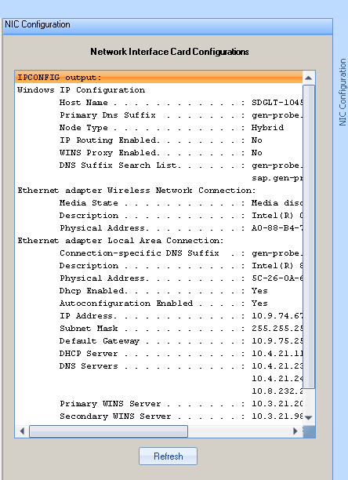
- Print or capture the Network Connectivity information.
- Launch the Panther System main assay software and log in as an Admin User.
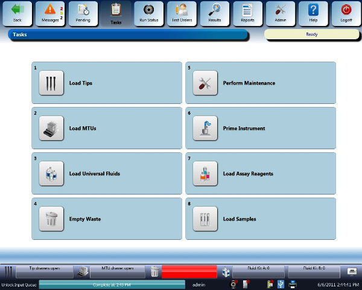
- Select Admin.
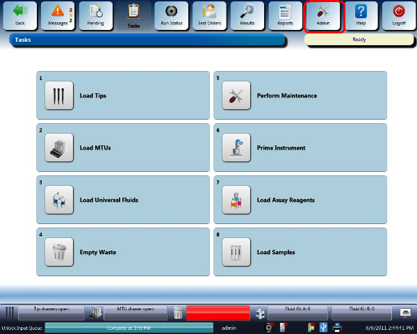
- Select System Configuration.
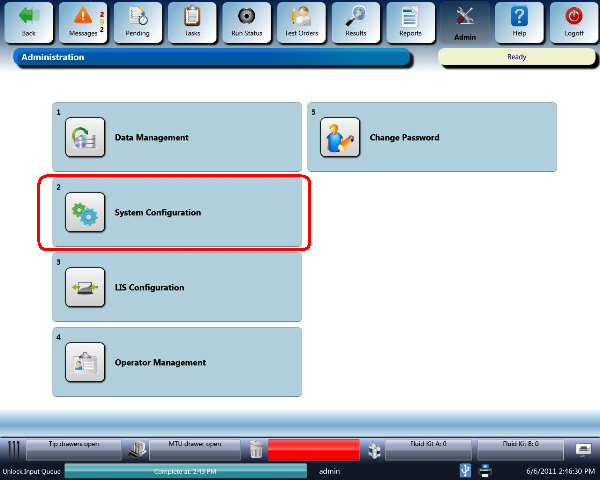
RDxM Configuration Capture
- Select the User Interface drop-down menu.
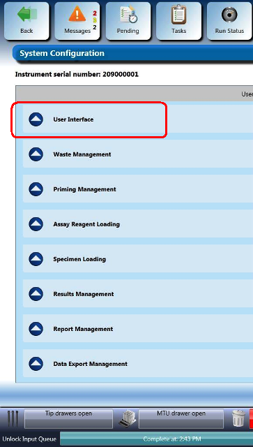
- Print or capture the User Interface configuration by saving a screen shot of the User Interface fields to the USB memory stick. Name the image Screen Shot, User Interface-RDxM.
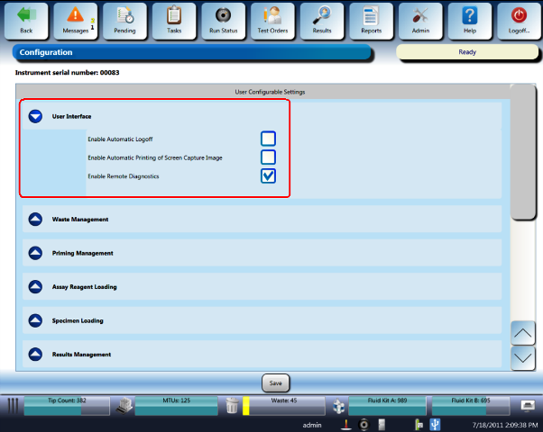

|
Screen Shot, User Interface-RDxM will be used during the RDxM Configuration procedure. |
LIS Configuration Capture
- Select the Results Management drop-down menu.
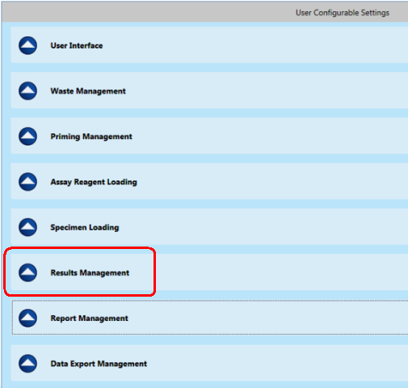
- Print or capture the Results Management configuration by saving a screen shot of the Results Management fields to the USB memory stick. Name the image Screen Shot, Results Management-LIS.
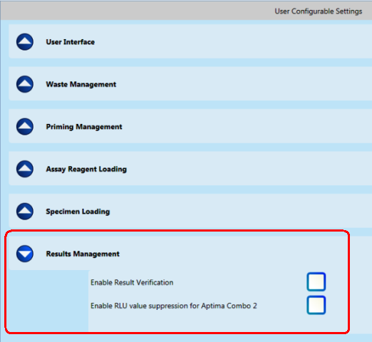
Screen Shot, Results Management-LIS will be used during the LIS Configuration procedure. - Select Admin.
- Select LIS Configuration.
- Print or capture the LIS Serial Configuration by saving a screen shot of this page to the USB memory stick. Name the image Screen Shot, LIS Serial-Screen1.
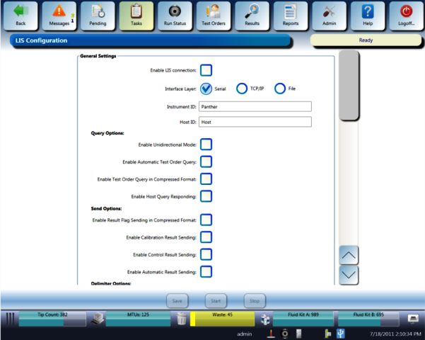
Screen Shot, LIS Serial-Screen1 will be used during the LIS Configuration procedure. - Scroll down the page to capture the second screen shot for LIS Serial Configuration. Print or capture the configuration by saving a screen shot of the fields to the USB memory stick. Name the image Screen Shot, LIS Serial-Screen2.
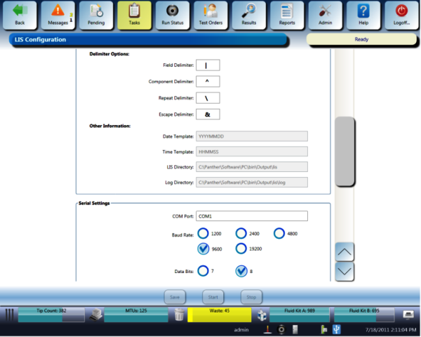
Screen Shot, LIS Serial-Screen2 will be used during the LIS Configuration procedure. - Scroll down the page to capture the third screen shot for LIS Serial Configuration. Print or capture the configuration by saving a screen shot of the fields to the USB memory stick. Name the image Screen Shot, LIS Serial-Screen3.
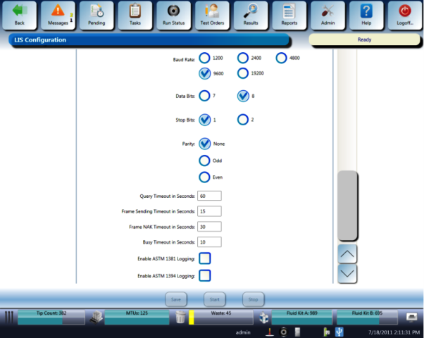
- Navigate to the TCP/IP section and capture the LIS TCP/IP Configuration by printing or saving a screen shot of this page to a USB memory stick. Name the image Screen Shot, LIS TCPIP-Screen1.
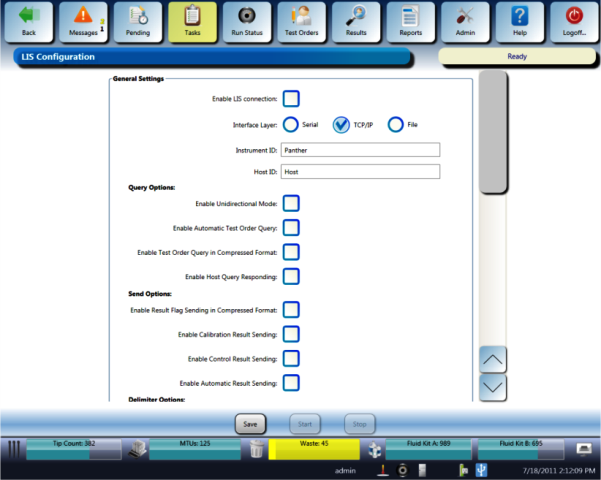
Screen Shot, LIS TCPIP-Screen1 will be used during the LIS Configuration procedure. - Scroll down the page to capture the second screen shot for LIS TCP/IP Configuration. Print or capture the configuration by saving a screen shot of the fields to the USB memory stick. Name the image Screen Shot, LIS TCPIP-Screen2.
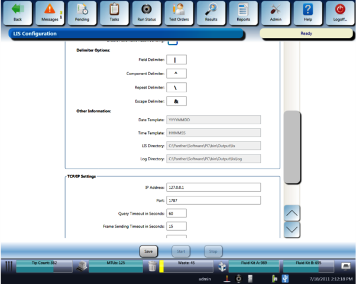
Screen Shot, LIS TCPIP-Screen2 will be used during the LIS Configuration procedure. - Scroll down the page to capture the third screen shot for LIS TCP/IP Configuration. Print or capture the configuration by saving a screen shot of the fields to the USB memory stick. Name the image Screen Shot, LIS TCPIP-Screen3.
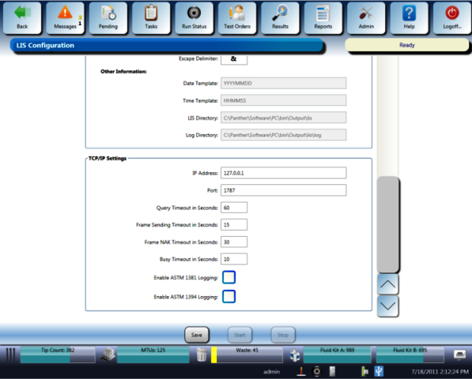
Screen Shot, LIS TCPIP-Screen3 will be used during the LIS Configuration procedure. - Close the Panther System main assay software.

 button at the top of the page to send feedback, comments, or change requests.
button at the top of the page to send feedback, comments, or change requests.